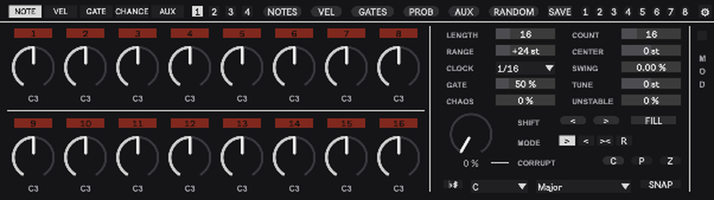
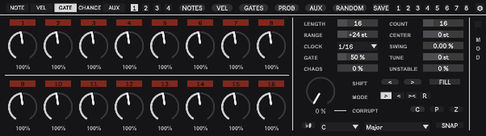
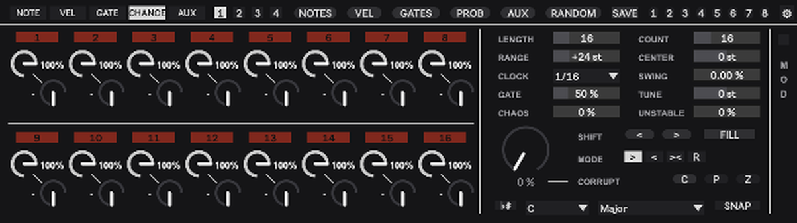
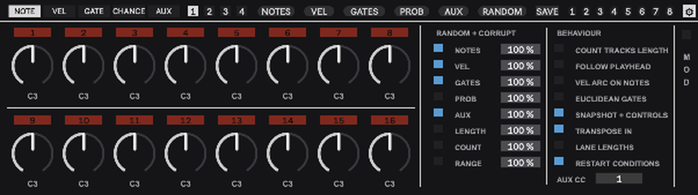
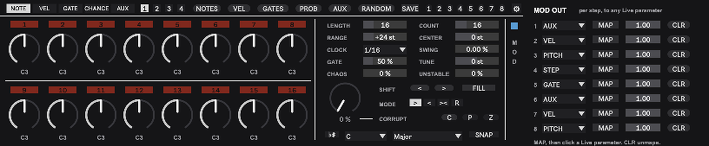

gleck.285 manual
A 64-step melodic sequencer for Ableton Live, built as the successor of the freeware ML-185 that Glenn used in every project. It keeps the ML-185’s core, sixteen knobs and a roll button, and grows it into pages, priorities, windows, conditions, drift and snapshots. Version at time of writing: v0.42 (2026-09-06). A playable browser version with the same sequencer code lives at glecko.xyz/285. Project: ~/Projects/285. Device: ~/Music/Ableton/User Library/Glecko_MAX4LIVE/gleck.285.amxd plus seq285.js beside it.

Lineage and inspiration
| Source | What the 285 took from it |
|---|---|
| RYK M-185 (DIY stage sequencer in the Roland System 100M numbering) and its M4L clone ML-185 | Eight knobs and one roll button as the whole instrument, the panel look (black, white rules, red step lights), the name |
| Moog Labyrinth | CORRUPT, drift at the write head with a second range that also flips steps; RANGE as a scaled spread with a quantizer keeping every note in scale; BUFFER as the reason snapshots exist |
| Elektron (Analog Rytm, Digitakt) | Trig conditions x:y, FILL and !FILL, the idea that a fill is a condition and not a mode |
| The Glecko rig | UNSTABLE, the house recipe for per-hit variation, translated to MIDI |
What a step is
Every one of the 64 steps holds six things: a note offset, a velocity, a gate length, a chance, a trig condition and an aux value. On top of that every step has a stored priority, and the priorities decide which steps play. Nothing is ever “off” for good: a step that does not play is simply beyond COUNT in the priority order.
The played note is C3 plus CENTER plus the offset scaled by RANGE, then snapped to the scale if SNAP is on, then transposed by TUNE. The knob shows the offset, the label under it shows the note that actually leaves the device.
The header
NOTE, VEL, GATE, CHANCE, AUX choose which lane the sixteen knobs show. CHANCE shows two mini knobs per step, chance top-left with its percentage, condition bottom-right with its text.
1 2 3 4 are the pages, sixteen steps each. White is the page you are looking at, red is the page the playhead is on.
NOTES, VEL, GATES, PROB, AUX roll one lane. RANDOM rolls every lane ticked under SETTINGS. Command-click on any of them resets that lane instead: notes to 0, velocity to 100, lengths to 100 percent with every step playing, chance to 100, aux to 0.
SAVE arms snapshot storing. Click a slot afterwards to store. Without SAVE a click on a stored slot recalls it. Dark is empty, grey stored, white last recalled. The slots are round so they never read as pages.
The gear swaps the right block between the controls and the settings. The controls sit in two columns paired by meaning, LENGTH and COUNT, RANGE and CENTER, CLOCK and SWING, GATE and TUNE, CHAOS and UNSTABLE. Below them the performance group on its own tint: the CORRUPT knob, SHIFT, FILL, MODE and the C, P and Z buttons. Along the bottom the scale row: the flat-sharp button, root, scale and SNAP. The MOD strip on the right edge opens the MOD OUT panel and stays in both views.
The step columns
The button above each knob shows the absolute step number and its state: black beyond LENGTH, grey inside LENGTH but resting, dark red playing, bright red when the playhead is on it, white when the playhead is on a resting step. Click a step to add it to the playing set or remove it. COUNT follows.
Command-drag on a NOTE knob moves that step’s velocity instead of the pitch. With VELOCITY ARC ON NOTES on, the arc of every note knob is the velocity and the needle is the pitch, so you see both lanes at once.

The controls
| Control | Meaning |
|---|---|
| LENGTH | How many steps play, 1 to 64. |
| COUNT | How many of those steps play, by priority. Raise it and the next steps in the priority order come in, lower it and they drop out in reverse. |
| RANGE | Spread of the pattern around CENTER. 24 plays the knobs as set, 1 puts every note on the centre, 48 doubles every interval, 96 quadruples them. Nothing is muted by it. |
| CENTER | Shifts every note, in semitones from C3. +12 is one octave up. It also decides where a NOTES roll lands. With TRANSPOSE IN on, a note played into the device sets it: C3 is 0, E3 is +4, held until the next note. |
| LENGTH on a lane layer | With LANE LENGTHS on and VEL, GATE, CHANCE or AUX up, the box shows and sets that lane’s own length. Back on NOTE it is the loop length again. |
| CHAOS | Chance per played note that it jumps an octave up or down. Play time only, the pattern is untouched. |
| CORRUPT | RANDOM at the playhead, continuous. At every pass the step under the playhead is touched with this chance, so 100 is every pass, and a touched step moves exactly as RANDOM would move it: every lane ticked in the settings grid, each by its amount. With the defaults that is note, velocity, gate length and aux; tick PROB to let the chance erode too. From 50 up the step also flips in or out of the playing set, every pass at 100. It rewrites the pattern; rolls, snapshots and COUNT bring it back. Red arc for that reason. |
| CLOCK | 1/64 to 4/1 including triplets and dotted values, so a step can last one, two or four bars. Swing only acts on 1/32, 1/16 and 1/8. |
| SWING | Swing on every other clock pulse. |
| TUNE | Transposes the MIDI after snapping, chromatic. CENTER moves inside the scale, TUNE moves the whole thing. |
| GATE | Global note length as a share of the clock step. Multiplied by the step’s own GATE value. |
| UNSTABLE | The rig recipe in MIDI: per hit a velocity scatter and a small late push, plus a slow drift of the velocity. Subtle in the lower half, falls apart at the top. Play time only. |
| MODE | Play direction, in the ML-185’s words: forward, reverse, pendulum, random. |
| SHIFT | Moves the whole pattern one step earlier or later inside LENGTH. |
| MOD (strip on the right edge) | Opens the MOD OUT panel. |
| flat-sharp, root, scale | Live’s in-scale button: lit, the 285 follows the scale and root chosen in Live’s own bar and ignores the two menus. Unlit, the menus decide. |
| SNAP | Whether played notes snap to the scale at all. Off plays the offsets chromatically. |
| FILL | Latch. While lit, steps with the FILL condition play and steps with !FILL rest. Map it to a pad for a momentary fill. |
The lanes in detail
NOTE. Offsets in semitones, the unit pattern. A NOTES roll writes offsets between -12 and +12, so at RANGE 24 a roll spans two octaves.
VEL. 1 to 127.
GATE. Note length per step, 10 to 200 percent of the clock step, scaled by the global GATE. Anything past one full step overlaps the next note, which on a mono synth is a tie, the 303 slide on Maze. With global GATE at 50 a step needs 200 to reach one full step, so put the global at 100 when you want ties.
CHANCE. Two things per step. The chance, 0 to 100 percent, that a gate actually fires. The condition, in Elektron’s language: a dash for always, then x:y where the step plays on pass x of every y passes (1:2 is every other pass, 3:4 the third of every four), then FILL and !FILL. Conditions are independent per step: FILL only reads the fill state, x:y keeps its own count whether fill is on or off. With RESTART CONDITIONS on, the default, the pass counter returns to the first pass whenever Live starts. With it off, the counter runs freely from device load.

AUX. A free lane, 0 to 127, sent as a MIDI CC (number under SETTINGS) and available to MOD OUT.
Priorities, COUNT, GATES and EUCLID
The GATES roll deals new priorities to all 64 steps, so exactly COUNT steps inside LENGTH play afterwards, raising COUNT reveals the next ones in the rolled order, and making LENGTH longer brings the new steps in at random positions instead of behind the old ones.
With EUCLID on (SETTINGS) the priorities are laid out Euclidean instead: COUNT hits spread evenly over LENGTH, re-laid whenever either changes. SHIFT rotates the result. Clicking steps still adds and removes on top.
Rolls and amounts
Every lane in the RANDOM + CORRUPT grid has an amount, and the grid rules both: RANDOM applies it to every step at once, CORRUPT to one step at a time at the playhead. The amount is the window a roll may land in: 100 lands anywhere in the lane’s range, 30 within 30 percent of the range around the current value, 5 only wiggles. Every step moves and none leaves its window. The same amounts drive RANDOM and the single lane buttons.
GATES is the one exception and reads like CORRUPT with a saw. From 0 to 50 only the note lengths move, inside a window that grows to full at 50, every trigger stays. From 50 the length window starts again from nothing and grows to full at 100, and alongside it the share of re-dealt triggers grows from none to all. Just above 50 the triggers move while the lengths barely do.

Copy, paste, undo
Three plain buttons on the CORRUPT row: C, P and Z.
C copies. Click a step knob first, on any layer, and C takes that step with every lane: note, velocity, gate length, chance, condition, aux and whether it plays. C reads C5 while step 5 is selected and plain C when nothing is, in which case it takes the shown page, all sixteen steps. C blinks once when it has copied. P pastes: a copied step onto the step you select next, a copied page onto the page you are looking at. P is blue while a copy waits, blinks when the paste lands and goes dark; the copy stays, so P again pastes it again. A pasted step is switched on or off exactly as if you had clicked it, so COUNT follows. A pasted page is meant to play exactly like its source, seamlessly. The copy lands at the start of the page you are looking at, except when the loop ends in the middle of an earlier page: then it lands right at the loop’s end. LENGTH grows to the end of the copied steps that were inside the source loop and never shrinks. Copy a 16-step page 1, paste onto page 2, and the second half plays like the first at 32 steps. Copy a 12-step loop, paste onto page 2, and you get the pattern twice at 24 steps, not 12 notes and 4 rests. Steps the longer loop uncovers before the landing stay silent, and COUNT follows. Z blinks when it has taken something back. Selecting means clicking a knob or a step number; clicking a page number or any other control clears the selection. The device watches the mouse itself for this, it does not depend on Live’s parameter selection.
Z undoes the last pattern edit: a knob move, a step click, a roll, RANDOM, SHIFT, a paste, a snapshot recall, and CORRUPT’s erosion, which is taken as one edit per run. A knob drag is one level, not one per pixel. Thirty-two levels, lit while there is something to take back. Live’s own undo still handles the knobs of the control block.
Settings
| Setting | Effect |
|---|---|
| RANDOM + CORRUPT / AMOUNT | Which lanes the RANDOM button rolls and CORRUPT erodes, and each lane’s window. The three globals answer to RANDOM only. NOTES, VEL, GATES and AUX on by default; PROB, LENGTH, COUNT and RANGE off. LENGTH rolls between 8 and 32. |
| AUX CC | The CC number of the aux lane. |
| COUNT TRACKS LENGTH | Changing LENGTH scales COUNT so the share of playing steps stays: 18 of 32 becomes 9 of 16. |
| FOLLOW PLAYHEAD | The shown page jumps to the playing page. |
| VEL ARC ON NOTES | Velocity as the arc under every note knob. |
| EUCLIDEAN GATES | Priorities laid out Euclidean. |
| SNAPSHOT + CONTROLS | Off, a snapshot recall changes only the pattern with LENGTH, COUNT, RANGE and CENTER. On, it restores the whole control block too. |
| TRANSPOSE IN | On by default. Notes played into the device, from a keyboard or a clip on the track, move CENTER and are not passed through. Play a chord track’s root notes into a 285 and the pattern follows the changes. |
| LANE LENGTHS | Off by default. On, VEL, GATE, CHANCE and AUX each get their own length, set in the LENGTH box while their layer is up. A lane repeats its first steps under the notes: velocity at length 4 under 16 notes is a four-step accent cycle. On that layer the step fields beyond the lane’s length are black, exactly like steps beyond LENGTH on the note layer, the playhead runs over the lane’s own steps, and the red and grey of the fields show the gates of the master steps the lane is covering right now, so the gate pattern scrolls through the lane cycle by cycle. Knobs beyond the length keep their own values, unused until you lengthen the lane again. The note lane keeps LENGTH, the gates and COUNT, since only notes have gates. Switching on copies LENGTH into every lane, so nothing changes until you shorten one; switching off makes every lane follow LENGTH again and remembers the lengths. Lane lengths travel with snapshots. |
| RESTART CONDITIONS | On by default. Starting Live returns the x:y condition counter to pass one. Off lets the condition cycle continue freely across transport starts. |
Snapshots
A snapshot holds every lane of all 64 steps, the priorities, LENGTH, COUNT, RANGE, CENTER and, unless switched off, the right block. Eight slots, saved with the Live set. Store: SAVE, then a slot. Recall: a stored slot. White means the current pattern is the stored or recalled snapshot; the slot returns to grey as soon as the pattern is edited. A good roll is safe the moment it is in a slot, which is what makes CORRUPT and RANDOM fearless.
MOD OUT

Eight slots. Each picks a source, AUX, VEL, PITCH, STEP or GATE, maps it to any parameter in the Live set with MAP and a click on the target, and scales it with a bipolar depth. GATE is 1 while a step actually fires, after chance and condition, so a target can move on hits only. CLR unmaps. Mappings survive save and reload. This is the per-step parameter lock of the 285: one lane, any destination.
Persistence
Knobs and step buttons are a view onto the current page. The pattern itself lives in two hidden stored step objects inside the device, so it survives saving and reloading with no extra automation parameters, and the view is rebuilt from it on load. Snapshots live in a pattrstorage in parameter mode, the same mechanism Rupture uses. Nothing is re-fired on load except number boxes, because a bang flips a toggle and advances a tab in Max.
Stopping Live clears any note waiting in the UNSTABLE delay and makes the note generator release every pitch it still holds. Long clock divisions and overlapping gates therefore stop cleanly with the transport.
Workflows
Start. Drop the device before Maze or DFAM27. NOTES, then GATES. Set LENGTH and turn COUNT down until the line breathes. SNAP on, flat-sharp lit, and the notes follow whatever key the set is in.
Sparse to dense. COUNT alone. Every step keeps its identity, the order in which they appear is the last GATES roll, and turning back down removes them in reverse.
Keep what works. SAVE, slot. Then RANDOM at a small amount, or CORRUPT at 10 to 20, and let it drift. The slot brings it back at any time.
Fills. Put FILL on the steps of the fill and !FILL on the steps it replaces. Latch FILL on the panel or hold a mapped pad.
Movement without notes. Draw a shape in AUX, map MOD OUT 1 to a filter, MOD OUT 2 on STEP to something slow. The pattern now modulates the synth per step, like a parameter lock.
Limits worth knowing
- Mono. Chords are the one thing this design does not do.
- Swing only on 1/32, 1/16 and 1/8 clocks.